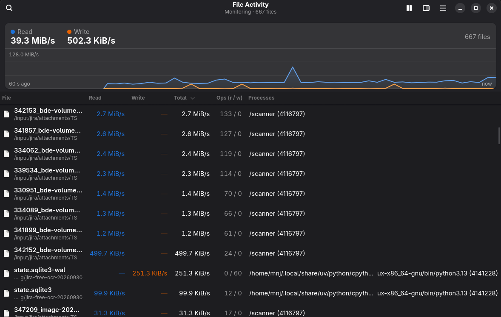

A Resource Monitor style viewer for Linux. One row per file, live read and write speeds, and the processes behind each one.

The same question Windows Resource Monitor answers, “what is hammering my disk?”, for Linux.
Every row is a file with its full path, including files that were already closed by the time you looked and files inside containers.
Read and write speed per file and in total, with a 60 second graph. Sort by any column, search by file or program, pause at any time.
Select a file to see each process using it, its speed, how many operations, and which file descriptors it holds.
Bytes are counted inside the kernel with eBPF and read once a second. Nothing is copied per read or write.
The window is an ordinary user program. A small helper, started after you approve it, does the privileged part and then gives up almost all of its privileges.
GTK 4 and libadwaita: follows your light or dark theme and accent, adapts to narrow windows, and uses standard shortcuts.
Three parts, each doing as little as it can.
A small eBPF program watches the read, write, sendfile, splice, copy_file_range and io_uring calls. It adds up bytes per file and process, and records each file's path the first time it sees it.
After you click Start Monitoring and authenticate, pkexec starts the helper. It loads the probes, then drops every capability except the one it needs to read other users' /proc entries. It stops when the window closes.
Once a second it receives the totals, turns them into speeds, and shows them. Until you approve the helper it still lists the files that programs have open.
Linux on x86_64 with GTK 4.14+ and libadwaita 1.7+. The probes are written for Linux 7.2 and need a kernel with BTF.
# 1. download the latest release from the releases page, then:
tar xf gtk-file-activity-*-x86_64-linux.tar.gz
cd gtk-file-activity-*/
sudo PREFIX=/usr ./install.sh
# 2. run it, then click "Start Monitoring"
gtk-file-activityTo build from source you need Rust, clang, and the GTK 4 and libadwaita development files:
git clone https://github.com/mnj/GTK-File-Activity
cd GTK-File-Activity
cargo build --release
./target/release/gtk-file-activityBytes that programs ask the kernel to read or write, including reads served from the page cache.
| Counted | read, write and their p, v and p…v2 variants, sendfile, splice, copy_file_range, io_uring reads and writes |
|---|---|
| Not counted | Memory-mapped file access, reads the kernel does for itself such as loading an executable, and classic async I/O |